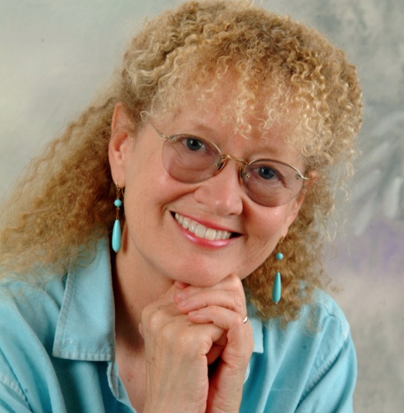
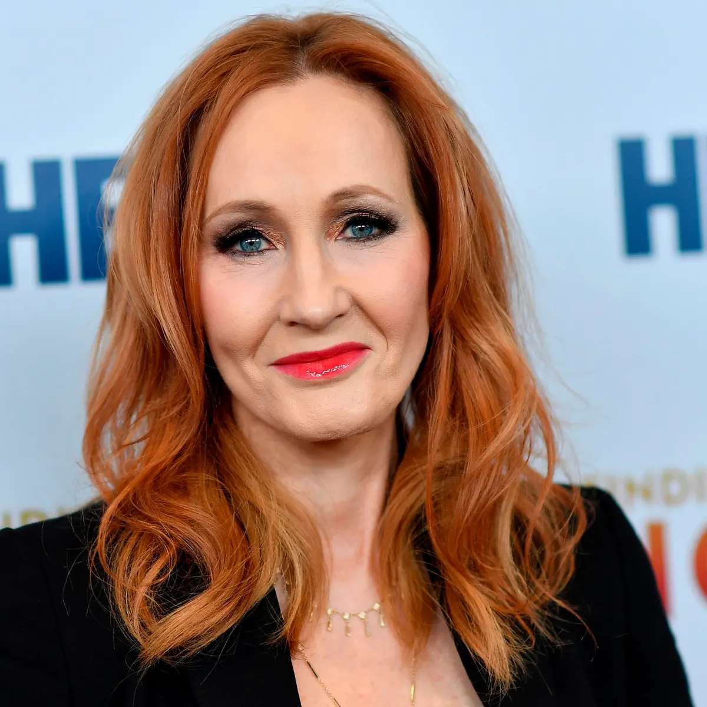

My inspiration
Click on the image to view more information.


Quotes
\
"I told him that I believe all things in nature bear the mark of their Maker. The eagle, the owl, and the wind. We sat silently for a long moment, understanding that we are not so different really." ― Mary Pope Osborne, Standing in the Light: The Captive Diary of Catharine Carey Logan, Delaware Valley, Pennsylvania, 1763
“Mickey Mouse is just a rat in suspenders.”
― Stuart Gibbs, Belly Up
"Happiness can be found, even in the darkest of times, if one only remembers to turn on the light." ― JK Rowling